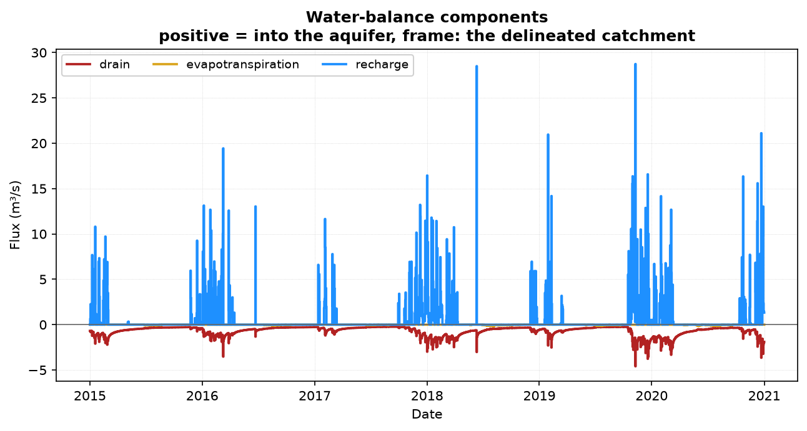
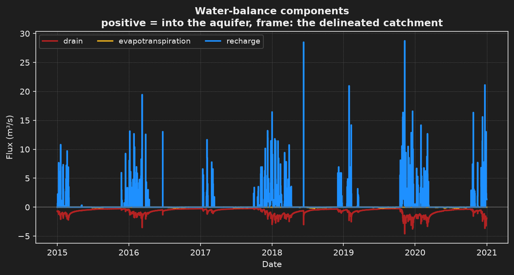

Step 6: the soil reservoir#
- Task
Compute the recharge from the rain and the evapotranspiration instead of reading it, and run the model every day over 2015-2020.
- Time
About 18 min for the run on 2 cores, once the data are cached. The soil check alone takes about 20 s.
- Needs
Network access on the first launch, for the SIM2 rain and ETP, then the cache. The example files (The staircase).
- Gives
Eleven figures and six files, with the soil budget in mm/year printed by the check.
Step 6 computes the recharge instead of reading it. A daily soil reservoir turns the rain and the evapotranspiration (ETP) of the SIM2 reanalysis into a recharge that falls to zero in a dry summer, and MODFLOW builds the slow response of the aquifer itself. The file explains why: the SIM2 drainage keeps about 0.3 mm/day all summer from 2016 on, a slow groundwater memory that the aquifer model would then count twice. The run is daily over 2015-2020. 2015 settles the soil and the aquifer, and the figures score 2016-2020.




The file#
This step inherits project.toml, the frozen reference model of the example, and not
step 5. The marks compare it with that file.
step6_soil_reservoir.toml inherits project.toml · + new · ~ changed · keys link to their card1# Step 6: the recharge computed from the rain and the ETP by a soil reservoir. 2# Nancon, daily 2015-2020, MODFLOW 6. The SIM2 drainage that 3# run_calibration_api_daily.toml loads keeps about 0.3 mm/day all summer from 4# 2016 on: a slow groundwater memory the aquifer model then counts twice. Here 5# a daily soil reservoir turns the SIM2 rain and ETP into a recharge that falls 6# to zero in dry summers, and MODFLOW builds the slow response itself. The ETP 7# the soil could not meet is offered to the water table, which evaporates it 8# where it is shallow. 9# 10# Check the soil alone first. It loads the rain and the ETP, prints the soil 11# budget in mm/year and the recharge for five other soil capacities beside the 12# gauged discharge, and writes no run: 13# 14# hmp run step6_soil_reservoir.toml --until load_data 15# hmp run step6_soil_reservoir.toml 16# 17# Needs network access at the first run for the SIM2 rain and ETP; the 18# downloads are cached after it. 2192 daily solves. 19 20+base_config = "project.toml" 21 22# The exports of project.toml name October 2002, outside this record. They are 23# dropped, and the blocks at the end of this file replace them. 24+export__delete = true 25 26[simulation] 27~name = "nancon_soil_reservoir_daily" 28~description = "Nancon, daily 2015-2020, recharge from a soil reservoir on the SIM2 rain and ETP." 29 30# Every [data.<type>] section reads this window. 2015 settles the soil and the 31# aquifer; the figures score 2016-2020. 32[simulation.time] 33~start_datetime = "2015-01-01" 34~end_datetime = "2020-12-31" 35~step_value = "1 day" 36 37# The rain and the ETP replace the recharge and the runoff of project.toml: 38# the soil reservoir computes the recharge, and the water that seeps out of 39# saturated ground reaches the gauge through the drains. A list replaces the 40# parent's, so the five families are written out; __delete drops the two 41# sections project.toml declares. 42[data] 43~types = ["dem", "hydrography", "hydrometry", "precipitation", "etp"] 44+recharge__delete = true 45+runoff__delete = true 46 47# Meteo-France SIM2 reanalysis, 8 km grid, rain plus snow, over the watershed. 48+[[data.precipitation.sources]] 49+source = "sim2" 50+extent = "watershed" 51 52# SIM2 reference evapotranspiration, on the same grid. 53+[[data.etp.sources]] 54+source = "sim2" 55+extent = "watershed" 56 57[flow] 58# "etp": the ETP the soil left unmet is offered to the water table, which 59# evaporates it where it is shallow: the rate is full at the drain elevation 60# and falls to zero 1 m below it (extinction_depth). 61~active_sinks_sources = ["recharge", "etp"] 62# A steady first day would hold the recharge of that day alone, zero after a 63# dry day. Every period is transient instead, and the run starts from the 64# steady state under the mean recharge of 2015-2020. 65+first_period_steady = false 66 67+[flow.ic] 68+type = "steady_state" 69 70# ru is the water the roots can draw, in mm, a property of the site. At 150 mm 71# the recharge of 2015-2020 matches the SIM2 drainage plus runoff; the soil 72# alone prints the recharge for 50 to 250 mm to compare with the gauge. alpha 73# (0.6), kc (1.0), the sealed and bypass fractions (0) and the transit time (0) 74# keep their defaults. 75+[flow.sinks_sources.recharge.soil] 76+ru = "150 mm" 77 78# A figure that fails is logged and the run goes on. 79[display] 80~on_error = "warn" 81# One-instant figures draw September 2019, the end of a dry summer. 82~time = "2019-09-15" 83~figures = [ 84 "watershed_id_card", 85 "flux_timeseries", 86 "hydrograph_log_nse", 87 "hydrograph_sim_obs", 88 "duration_curve", 89 "recession", 90 "watertable_depth_map", 91 "seepage_map", 92 "cross_section", 93 "flow_persistence_map", 94 "flow_intermittence_map", 95] 96 97# The seepage of February 2020, near the largest saturated extent. 98+[display.overrides.seepage_map] 99+time = "2020-02-15" 100 101# The scored years, 2015 being the spin-up, shaded. 102[display.overrides.hydrograph_log_nse] 103~scoring_window = ["2016-01-01", "2020-12-31"] 104 105# One hydrological year inside the run. 106[display.overrides.flow_intermittence_map] 107~cycle = "2019" 108 109# What the run writes to share/nancon_soil_reservoir_daily/. 110 111# The catchment and the mapped network: GeoPackage. 112[[export]] 113variables = ["watershed", "hydrographic_network_reference"] 114 115# The water table and the seepage cells at the end of the summer of 2019. 116[[export]] 117variables = ["watertable_depth", "seepage_mask"] 118time = "2019-09-15" 119 120# Simulated and gauged discharge over the scored years: CSV. 121[[export]] 122variables = ["discharge", "discharge_obs"] 123period = ["2016-01-01", "2020-12-31"] 124 125# The daily water budget, the soil recharge and the water table evaporation 126# among its terms: CSV. 127[[export]] 128variables = "budget"
The resolved file of step 6 against the resolved file of project.toml.
--- project
+++ step6_soil_reservoir
@@ -7,4 +7,4 @@
[simulation]
-name = "nancon_intermittence_mf6"
-description = "Nancon catchment, monthly transient 2000-2002, seasonal seepage intermittence."
+name = "nancon_soil_reservoir_daily"
+description = "Nancon, daily 2015-2020, recharge from a soil reservoir on the SIM2 rain and ETP."
if_exists = "replace"
@@ -12,5 +12,5 @@
[simulation.time]
-start_datetime = "2000-01-01"
-end_datetime = "2002-12-31"
-step_value = "1 month"
+start_datetime = "2015-01-01"
+end_datetime = "2020-12-31"
+step_value = "1 day"
@@ -43,4 +43,4 @@
"hydrometry",
- "recharge",
- "runoff",
+ "precipitation",
+ "etp",
]
@@ -64,14 +64,10 @@
-[[data.recharge.sources]]
-source = "custom"
-path = "recharge"
-station_ids = [
- "NANCON",
+[data.precipitation]
+sources = [
+ { source = "sim2", extent = "watershed" },
]
-[[data.runoff.sources]]
-source = "custom"
-path = "runoff"
-station_ids = [
- "NANCON",
+[data.etp]
+sources = [
+ { source = "sim2", extent = "watershed" },
]
@@ -86,2 +82,3 @@
"recharge",
+ "etp",
]
@@ -90,2 +87,3 @@
]
+first_period_steady = false
@@ -106,5 +104,11 @@
+[flow.ic]
+type = "steady_state"
+
+[flow.sinks_sources.recharge.soil]
+ru = "150 mm"
+
[display]
-on_error = "raise"
-time = "2002-10-15"
+on_error = "warn"
+time = "2019-09-15"
figures = [
@@ -113,14 +117,10 @@
"hydrograph_log_nse",
- "cross_section",
+ "hydrograph_sim_obs",
+ "duration_curve",
+ "recession",
"watertable_depth_map",
"seepage_map",
+ "cross_section",
"flow_persistence_map",
"flow_intermittence_map",
- "seepage_network_confusion_map",
- "downslope_distance_map",
- "downslope_distance_crossing",
- "bisection_bracket_trace",
- "parameter_cost_profile",
- "matching_hydrographic_network_card",
- "calibration_progress",
]
@@ -131,3 +131,3 @@
[display.overrides.flow_intermittence_map]
-cycle = "2002"
+cycle = "2019"
@@ -135,5 +135,8 @@
scoring_window = [
- "2001-01-01",
- "2002-12-31",
+ "2016-01-01",
+ "2020-12-31",
]
+
+[display.overrides.seepage_map]
+time = "2020-02-15"
@@ -150,3 +153,3 @@
]
-time = "2002-10-15"
+time = "2019-09-15"
@@ -157,2 +160,6 @@
]
+period = [
+ "2016-01-01",
+ "2020-12-31",
+]
Run it#
Check the soil alone first. This loads the rain and the ETP, prints the soil budget in mm/year and the recharge for other soil capacities beside the gauged discharge, and writes no run, according to the header of the file.
hmp run step6_soil_reservoir.toml --until load_data
Then run the whole model:
hmp run step6_soil_reservoir.toml
import hydromodpy as hmp
hmp.run("step6_soil_reservoir.toml", until_step="load_data") # the soil check, returns None
run = hmp.run("step6_soil_reservoir.toml")
The check ends with this table:
mm/year mean 2016 least rain 2019 most rain
precipitation 903.9 790.4 1024.8
ETP 698.3 640.7 729.8
ETR 547.4 512.0 526.0
recharge to MODFLOW 356.4 291.1 497.8
...
unmet ETP 150.8 mm/year, offered to EVT: the water table gives it only where it is shallow
recharge July-September: 0.004 mm/day
recharge for other ru, mm/year: 50 mm 442.8 | 100 mm 392.4 | 150 mm 356.4 | 200 mm 324.8 | 250 mm 295.2
gauged discharge NANCON: 326.5 mm/year on 2192 of 2192 days, catchment 64.62 km2
The first launch needs network access for the SIM2 rain and ETP. The downloads are cached. The run is 2192 daily solves, so it takes longer than the monthly steps. Without a network, the failure is the one of step 3, with the SIM2 source in the message.
What you get#
Eleven figures. The one-instant figures draw 15 September 2019, the end of a dry summer,
except seepage_map, which draws 15 February 2020, near the largest saturated extent.
Figure |
What it shows |
|---|---|
|
As in step 1 |
|
The water balance through time, with the soil recharge and the water table evaporation among the components |
|
Simulated and gauged discharge |
|
The discharge on a log axis, which weighs the recessions. The scored years, 2016 to 2020, are shaded, 2015 being the spin-up |
|
The flow-duration curve at the gauge: the share of time each discharge is exceeded |
|
The recession limbs extracted from the discharge series |
|
As in step 1, for the dates above |
|
The share of the run each cell flows |
|
Perennial, intermittent or dry cells over the hydrological year 2019 |
Four export blocks write six files in share/nancon_soil_reservoir_daily/: the catchment
and the mapped network (two GeoPackages), the water table and the seepage cells of
15 September 2019 (two GeoTIFFs), the simulated and gauged discharge over the scored years
(CSV), and the daily water budget (CSV).
Key fields#
ru is what the roots can draw, a property of the site: no value is typical. The file sets
150 mm and notes that the recharge of 2015-2020 then matches the SIM2 drainage plus
runoff. Its other soil parameters keep their defaults. The ETP that the soil could not
meet is offered to the water table, which evaporates it where it is shallow: the rate is
full at the drain elevation and falls to zero 1 m below it.
Previous: Step 5: every export. To see how the soil reservoir works, read The daily soil reservoir. K and Sy by zone are keys of [flow.param]. After the last step: After the staircase.